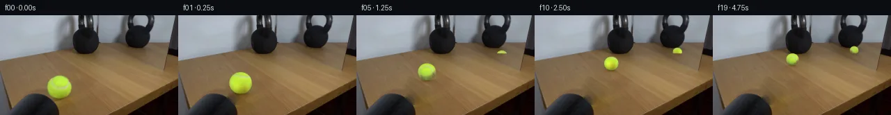

![首帧]()

Round 00
2026-11-05T17:02:08.833786+00:00像素候选变化代码 +265/−0inspection 更新
pixels 9dd1974055e6b863 · code 84f45da721dc8482
查看本轮 generate.py 真实 diff
--- previous/generate.py +++ current/generate.py @@ -0,0 +1,265 @@ +"""PixelWorld continuation using only the supplied frame and analytic pixel work. + +No external image, model, renderer, or reference is used. RGB-only diagnostics. +""" +from pathlib import Path +import json +import math +import base64 +import re +import numpy as np +from PIL import Image, ImageDraw +from scipy.ndimage import map_coordinates, distance_transform_edt, gaussian_filter +from scipy.sparse import coo_matrix +from scipy.sparse.linalg import spsolve +from artifact_io import save + +ROOT = Path(__file__).resolve().parent +Y, X = np.mgrid[:144, :256].astype(np.float64) +CX0, CY0, RX0, RY0 = 85.2, 102.8, 17.55, 16.75 +HORIZON, VPX, FOCAL = 20.0, 145.5, 180.0 +DEPTH_TRAVEL = .947 +COLLISION_TIME = 3.5 +AA = 4 + + +def smoothstep(v): + v = np.clip(v, 0, 1) + return v*v*(3-2*v) + + +def wood_repair(source): + """Transfer real nearby wood gradients into ball/shadow hole with fixed rim.""" + r = np.sqrt(((X-CX0)/RX0)**2+((Y-CY0)/RY0)**2) + shadow = ((X-84.0)/19.0)**2+((Y-121.8)/8.1)**2 < 1 + # Preserve the dark cropped foreground feature rather than guessing it. + wood_or_ball = (source.max(2)>82) & (source[:,:,0]>source[:,:,2]*1.12) + hole = ((r<1.10) | shadow) & wood_or_ball + donor = source.copy() + donor[:, :180] = source[:, 50:230] + points = np.argwhere(hole) + ids = np.full(hole.shape, -1, np.int32) + ids[hole] = np.arange(len(points)) + rr, cc, vals = [], [], [] + rhs = np.zeros((len(points), 3)) + for k,(y,x) in enumerate(points): + rr.append(k); cc.append(k); vals.append(4.0) + for dy,dx in ((0,1),(0,-1),(1,0),(-1,0)): + yy,xx = y+dy,x+dx + rhs[k] += donor[y,x]-donor[yy,xx] + if hole[yy,xx]: + rr.append(k); cc.append(ids[yy,xx]); vals.append(-1.0) + else: + rhs[k] += source[yy,xx] + matrix = coo_matrix((vals,(rr,cc)), shape=(len(points),len(points))).tocsr() + result = source.copy() + result[hole] = np.clip(spsolve(matrix,rhs),0,255) + return result, hole + + +def source_texture(source, clean): + """Estimate source albedo on the visible hemisphere, with explicit rear fill.""" + nx,ny = (X-CX0)/RX0,(Y-CY0)/RY0 + r2 = nx*nx+ny*ny + nz = np.sqrt(np.maximum(0,1-r2)) + features = np.stack([np.ones_like(nx),nx,ny,nz,ny*ny],-1) + felt = (r2<.88**2) & (source[:,:,2]<85) & (source[:,:,1]-source[:,:,0]>30) + coeff = np.linalg.lstsq(features[felt],source[:,:,1][felt],rcond=None)[0] + # Robust trimming keeps the pale seam out of the estimated illumination. + for _ in range(3): + residual = source[:,:,1]-features@coeff + good = felt & (np.abs(residual)<8) + coeff = np.linalg.lstsq(features[good],source[:,:,1][good],rcond=None)[0] + light = np.clip(features@coeff/235.0,.47,1.12) + alpha = smoothstep((1.035-np.sqrt(r2))*min(RX0,RY0)/1.15) + unmixed = (source-clean*(1-alpha[:,:,None]))/np.maximum(alpha[:,:,None],.15) + albedo = np.clip(unmixed/light[:,:,None], 0, 295) + good = (alpha>.93) & (r2<.975**2) + # The transparent circumference is not trustworthy texture evidence. + _, nearest = distance_transform_edt(~good,return_indices=True) + albedo[~good] = albedo[nearest[0][~good],nearest[1][~good]] + return albedo,coeff + + +pitch = math.atan((72-HORIZON)/FOCAL) +up = np.array([0., -math.cos(pitch), math.sin(pitch)]) +direction = np.array([(VPX-128)/FOCAL, (HORIZON-72)/FOCAL, -1.]) +axis = np.cross(up,direction) … diff truncated; 178 more lines …